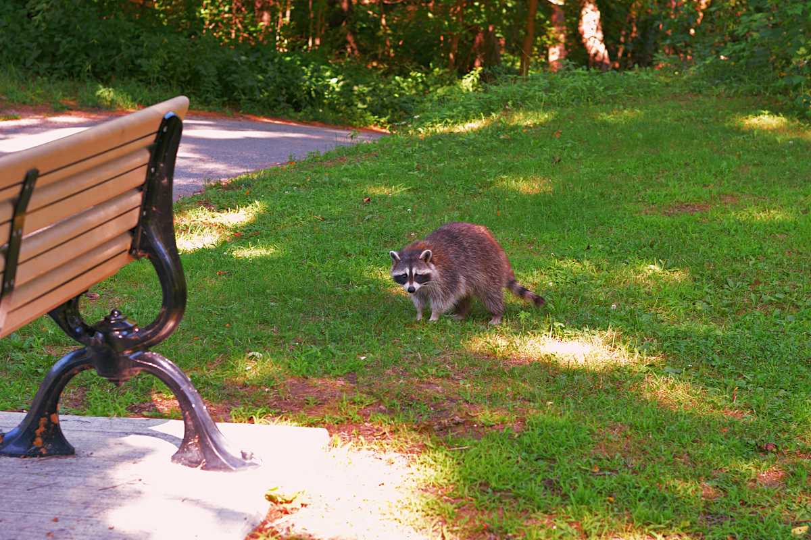

Here are a few photos that I took during my first trip to Morningside Park in Scarborough, Ontario. I was really surprised by not only the size of the park but also the density of the natural areas which led to me taking several trips between August and September. Eventually, I was able to explore the entire North-South Trail that extends from the park's entrance on the west side of Morningside Ave all the way to the very end of the trail just north of Kingston Ave where it terminates in a small neighbourhood road (Livingston Rd N, that is.) This post won't really cover the trail system that much but it should offer a glimpse of what's more to come in the next article where I will actually outline the exact path(s) I took and show all the photos I took along the way.)
Nikon D3300 | Nikkor 35 mm f/1.8G DX
Looking north-east along the Highland Creek. Fun fact: The Highland Creek runs through several parks across Scarborough (including Morninside Park) all the way
to Colonel Danforth Park in Port Union and through Lower Highland Creek Park where it finally empties into Lake Ontario. I will definitely include a post with
photos from a more recent trip where I walked from the entrance of Colonel Danforth Park to the shores of Lake Ontario.

Nikon D3300 | Nikkor 35 mm f/1.8G DX
I still find myself amused every time I hear the term "trash panda" being used somewhere.
Nikon D3300 | Nikkor 35 mm f/1.8G DX
Nikon D3300 | Nikkor 35 mm f/1.8G DX
This photo has a sad backstory to it from what I can gather. The rabbit in the photo is not an Eastern cottontail as I would have expected and have encountered
numerous times in the past but rather appears to be a domestic rabbit. (It's not a melanistic cottontail rabbit of some sort either.) The most likely
scenario is that this was a pet rabbit that had either escaped or had been dumped, with both possibilities being highly unfortunate.
One key thing I noticed was the rabbit's behaviour: It was eating dandelion leaves and grass in an open area and did not display any fear at all when I approached it.
In fact, a passerby who was walking in front of me was able to freely pet the rabbit as it ate. (I however did not pet the rabbit although the temptation
was real.) I never saw the rabbit again in the many subsequent trips to the park.
Nikon D3300 | Nikkor 35 mm f/1.8G DX
Looking south along the Highland Creek.
Nikon D3300 | Nikkor 35 mm f/1.8G DX
Another view looking east on the shores of the Highland Creek.
Nikon D3300 | Nikkor 35 mm f/1.8G DX
Nikon D3300 | Nikkor 35 mm f/1.8G DX
I found this half-buried, upturned shopping cart somewhere along the creek as I was following it south. It looks like it's been here for a decent amount of time.
Nikon D3300 | Nikkor 35 mm f/1.8G DX
Nikon D3300 | Nikkor 35 mm f/1.8G DX
Nikon D3300 | Nikkor 35 mm f/1.8G DX
Yes, this is the exact same scene as the first photo but is instead framed in a portrait orientation. Here's a good tip for every photographer out there: Never stick to framing
a scene in a single way if time allows for multiple exposures to be taken. Better still, if you can move around the subject, mind the corners and get rid of distracting items to get a better
composition overall. In this case, I'd say a landscape orientation suits this scene a lot better.
© Trevor Li 2019 - 2021, all rights reserved. All images taken by Trevor Li unless noted.